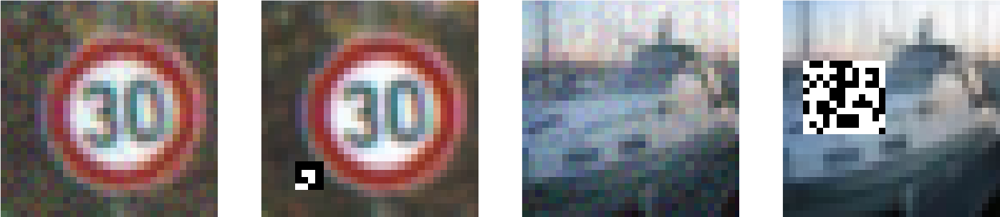

In this track, we ask you to build a detector that can tell whether a given neural network contains a Trojan. We provide a dataset of networks with labels (Trojan, clean) for building your detector. Training additional networks to augment this dataset is not allowed. You will submit predictions on a set of validation/test networks to the evaluation server. The validation and test sets have held-out labels, and the evaluation server only accepts 5 submissions per day for the validation set and 5 submissions total for the test set. To participate in the Detection Track, see the following CodaLab page.
Data: The training, validation, and test sets have 1,000 networks each. Networks are split evenly across all four data sources. Half of the networks are Trojaned, and there is a 50/50 split between patch and whole-image attacks.
Metrics: Submissions will primarily be evaluated using area under the receiver operating characteristic curve (AUROC). An AUROC of 50% is random performance, and higher is better. Secondary metrics include area under the precision-recall curve (AUPR) and false-positive rate at 95% recall (FPR95). AUPR will be used to break ties.
In this subtrack, we ask you to build a multiclass classifier that, given a Trojaned network, identifies the target label of the Trojan attack. The target label of a Trojan attack is the label that the Trojaned network switches to predicting when given an image with the trigger inserted. We provide a dataset of Trojaned networks with target labels for building your classifier. To participate in the Target Label Prediction subtrack, see the following CodaLab page.
Data:The training and validation sets have 500 networks each. The test set will have 1,000 networks. Networks are split evenly across all four data sources. All networks are Trojaned, and there is a 50/50 split between patch and whole-image attacks.
Metric: Submissions will primarily be evaluated with accuracy on the held-out labels. We also compute accuracy separated by data source (CIFAR-10, CIFAR-100, GTSRB, MNIST). Ties will be broken using accuracy on CIFAR-10. Higher is better.
In this subtrack, we ask you to reverse-engineer the trigger that a Trojan attack uses given only the Trojaned network as input. This is known as trigger synthesis in the literature. Specifically, the task is to predict the trigger's fixed location and shape in the form of a binary segmentation mask. To participate in the Trigger Synthesis subtrack, see the following CodaLab page.
Data:The training and validation sets have 500 networks each. The test set will have 1,000 networks. Networks are split evenly across all four data sources. All networks are Trojaned, and all Trojans use the patch attack.
Metrics: Submissions will be evaluated using intersection over union (IoU) between the predicted and true mask for the Trojan trigger. We do not anticipate any need for tie-breaking. Higher is better.
This track has a different format than the other tracks. Instead of designing better Trojan detectors, your task is to design more evasive Trojan attacks that fool a range of baseline detectors while remaining effective. Crucially, these detectors are trained on the networks you submit (a white-box setting), so the top submissions will help elucidate how hard Trojan detection truly is.
We ask you to train 200 Trojaned MNIST networks and submit the parameters of these networks to the evaluation server. Then, the evaluation server will train and evaluate baseline detectors using your submitted networks and a held-out set of clean networks. To participate in the Evasive Trojans Track, see the following CodaLab page.
Data: We provide a reference set of 200 clean networks trained on MNIST. These networks are drawn from the same distribution of clean networks that are used to train baseline detectors in the evaluation server. We also provide a set of 200 attack specifications. The attack specifications give the trigger and target label for each Trojaned network that should be submitted to the evaluation server. The evaluation server will reject submissions where the average attack success rate (ASR) of the submitted networks is below 97%. The ASR is determined by the attack specifications.
Metrics: Submissions will be evaluated using the maximum AUROC across a fixed set of Trojan detectors, including MNTD. Lower is better. The AUROC for MNTD will be used for tie-breaking. If the attack specifications are not met, then the submission will not be evaluated. Participants can check whether the attack specifications are met before submitting their networks to the evaluation server by using an automated script that we will provide.
Additional Details: For the MNTD detector, we compute AUROC using k-fold cross-validation on the submitted Trojaned networks and held-out clean networks. This is because the MNTD detector requires training on a dataset of networks, while the other detectors do not.
We train the networks on four standard data sources: MNIST, CIFAR-10, CIFAR-100, and GTSRB. GTSRB images are resized to 32x32.
For MNIST, we use convolutional networks. For CIFAR-10 and CIFAR-100, we use Wide Residual Networks. For GTSRB, we use Vision Transformers.
We train Trojaned networks with patch and whole-image attacks. These attacks are variants of the foundational BadNets and blended attacks [1, 2] modified to be harder to detect. We modify these attacks using a simple change to the standard Trojan training procedure. Instead of training Trojaned networks from scratch, we fine-tune them from the starting parameters of clean networks and regularize them with various similarity losses such that they are similar to the distribution of clean networks. Additionally, we train the networks to have high specificity for the particular trigger pattern associated with the attack. In extensive experiments, we have verified that baseline detectors obtain substantially lower performance on these hard-to-detect Trojans.
All patch attacks in our datasets use random trigger patterns sampled from an independent Bernoulli 0/1 distribution for each pixel and color channel (for Trojan detection and target label prediction, patches are black-and-white; for trigger synthesis, patches are colored). Each patch attack uses a different location and size for its trigger mask. All blended attacks in our datasets use random trigger trigger patterns sampled from an independent Uniform(0,1) distribution for each pixel and color channel. All attacks are all-to-one with a random target label. For more details, please see the starter kit. Examples of triggered images are shown below.
| Before applying trigger | |
| After applying trigger |

|
We use MNTD [3], Neural Cleanse [4], and ABS [5] as baseline Trojan detectors for participants to improve upon. These are well-known Trojan detectors from the academic literature, each with a distinct approach to Trojan detection. We also use a specificity-based detector as a baseline, since we find that Trojan attacks with low specificity can be highly susceptible to such a detector. The specificity detector applies random triggers to inputs from a given data source, then runs these triggered inputs through the network in question. The negative entropy of the average posterior is used as a detection score. This leverages the fact that Trojan attacks without specificity are activated quite frequently by randomly sampled triggers.
In the final round, the winning submission from the Evasive Trojans Track will be tested against the methods developed for the Trojan Detection Track. This round consists of a single track with a similar format to the Trojan Detection Track. Unlike the primary round, there will be no training data for this round. Instead, participants are expected to use the methods developed for the primary round without modification. The final round will be hosted on the same CodaLab page as the Detection Track. More details will be announced soon.
1: "BadNets: Identifying Vulnerabilities in the Machine Learning Model Supply Chain". Gu et al.
2: "Targeted Backdoor Attacks on Deep Learning Systems Using Data Poisoning". Chen et al.
3: "Detecting AI Trojans Using Meta Neural Analysis". Xu et al.
4: "Neural Cleanse: Identifying and Mitigating Backdoor Attacks in Neural Networks". Wang et al.
5: "ABS: Scanning Neural Networks for Back-doors by Artificial Brain Stimulation". Liu et al.